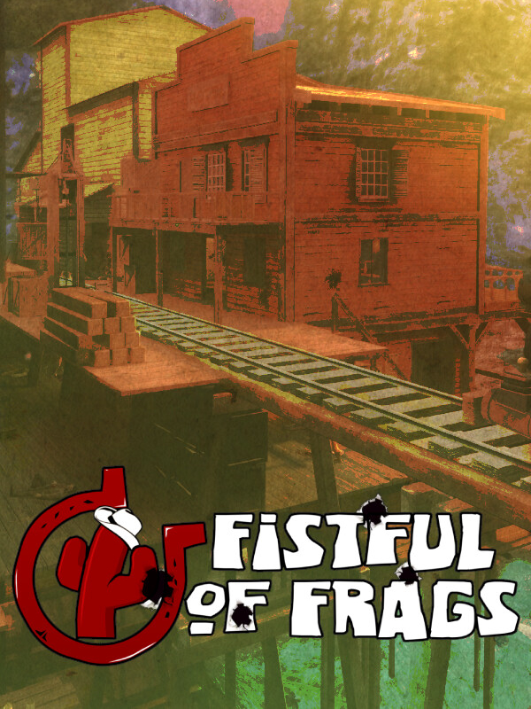

Fistful of Frags
Fistful of Frags
详情
|  | |
| 游玩时间 | 6h 38m 0s |
| 上次活动 | 2023/10/14 21:45:41 |
| 已添加 | 2023/10/6 20:32:34 |
| 已修改 | 2023/10/6 20:41:48 |
| 完成状态 | 游玩过 |
| 库 | Steam |
| 来源 | Steam |
| 平台 | PC (Windows) |
| 发布日期 | 2007/12/20 |
| 社区评分 | 85 |
| 媒体评分 | |
| 用户评分 | |
| 流派 | Indie Shooter |
| 开发者 | Fistful of Frags Team |
| 发行机构 | Fistful of Frags Team |
| 功能特色 | Co-Operative Multiplayer |
| 链接 | Steam Official Twitch Wikia Wikipedia |
| Tag | [Engine] Source |
描述
Fistful of Frags was born years ago as a Wild West themed modification for Source engine. It has been completely renewed for its Steam release, paying special attention to combat mechanics.
Also please note this is a completely *free* standalone mod, no micro-transactions exist, no registration required. Just install and play. You may see ads when joining certain third party servers that host our game for free. That's however completely unrelated to FoF dev team, we do not profit from them. Also note that some weapons and perks may be locked for Steam's level 0 accounts until they reach level 1 or complete a play-to-earn-points progression system.
Also please note this is a completely *free* standalone mod, no micro-transactions exist, no registration required. Just install and play. You may see ads when joining certain third party servers that host our game for free. That's however completely unrelated to FoF dev team, we do not profit from them. Also note that some weapons and perks may be locked for Steam's level 0 accounts until they reach level 1 or complete a play-to-earn-points progression system.
Features
- Shootout (classic death-match / free for all) and up to 4 team death-match: non stop, all around action. FFA supports ladder based global ranks.
- Teamplay mode: objective based game mode featuring zone capture and 'push the cart' levels.
- Cooperative mode: up to 6 players; features missions as bank assault, last stand, push
- Singleplayer challenges and missions: learn the game alone, master the skills you'll need later at your own pace
- Other multiplayer modes: Grand Elimination (a fast paced Battle Royale like mode), Break Bad (team based death-match like mode featuring custom rules as unarmed players or objetives), Team Elimination (kill the entire enemy team once at least to win the round), Versus (1 vs 1 duel matches, each map features different arenas, fair match creation based on player rank/skill)
- Detailed dual wield system: double dynamic crosshair, weapon flip for extra accuracy options, drop or throw your handguns as projectile attack
- Multiplayer bots for off-line practice
- Historical black gunpowder based weapons as Colt Peacemaker/Navy/Walker, S&W Schofield, Volcanic pistol, Deringer, Smith Carbine, Sharps rifle or Henry Rifle
- Customization options: choose primary/secondary weapons and special perks
- Skill based scoring system: the more skill required to accomplish an attack, the higher score is
- Source Engine 2013: community managed dedicated servers, LAN support, 3rd party level design and user customization allowed